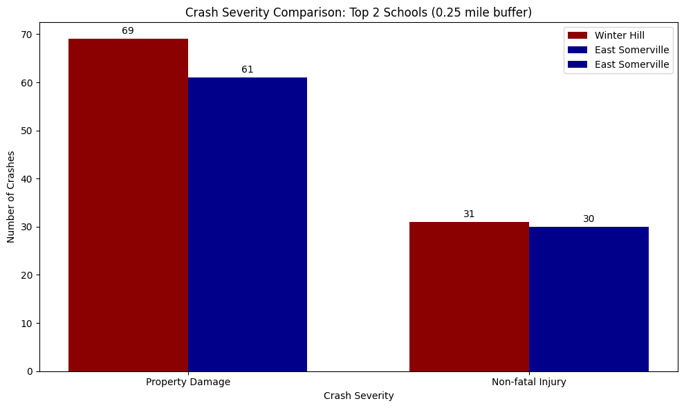
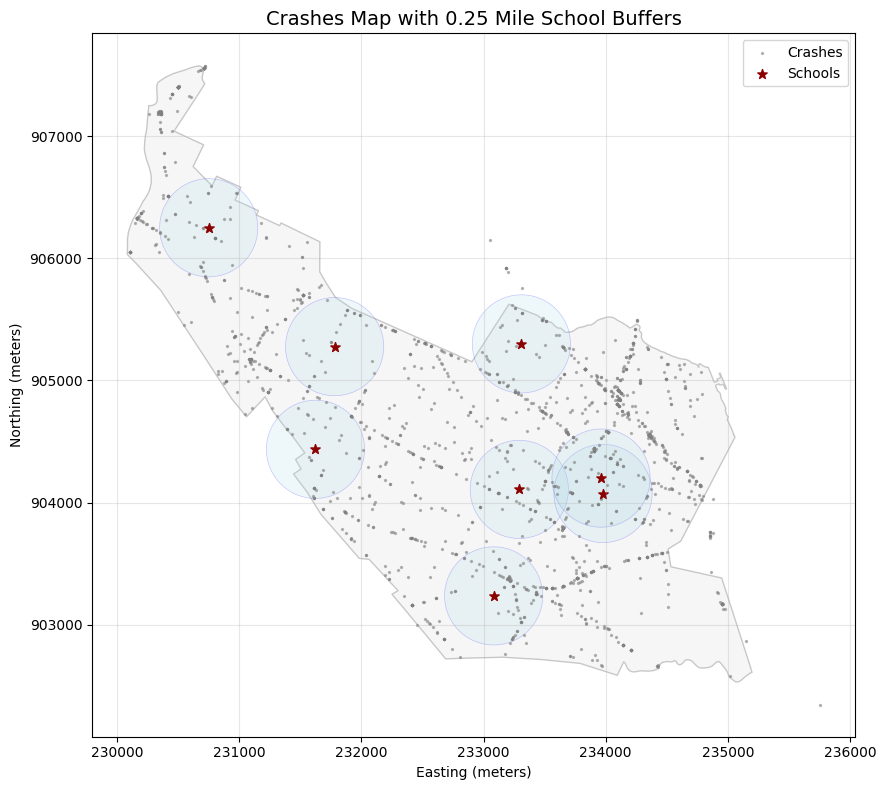
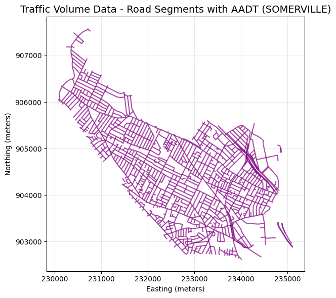
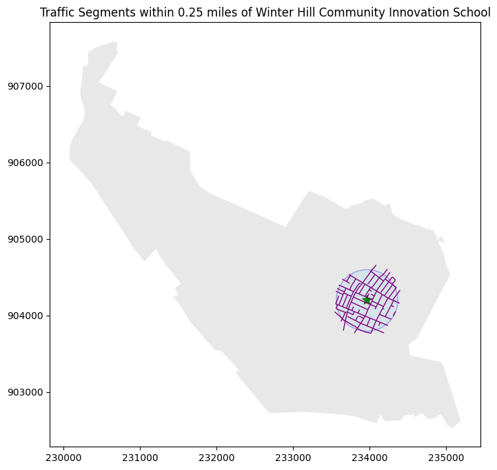
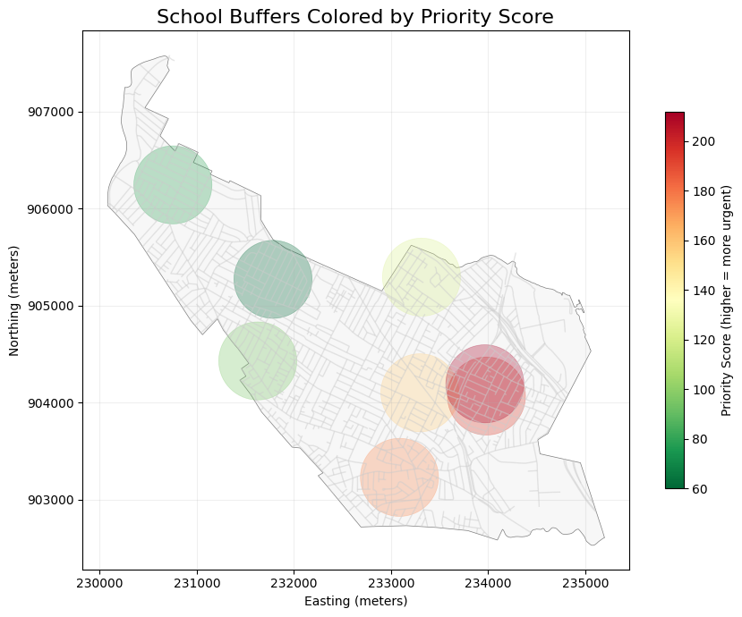
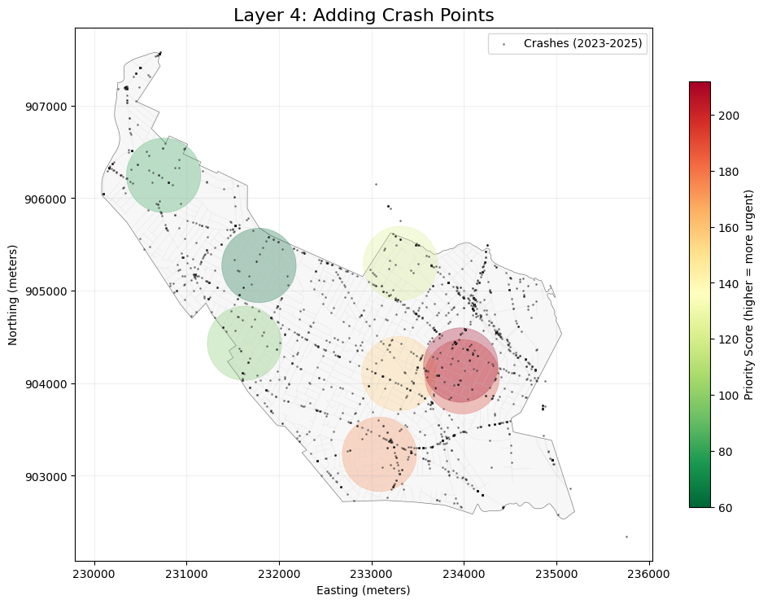
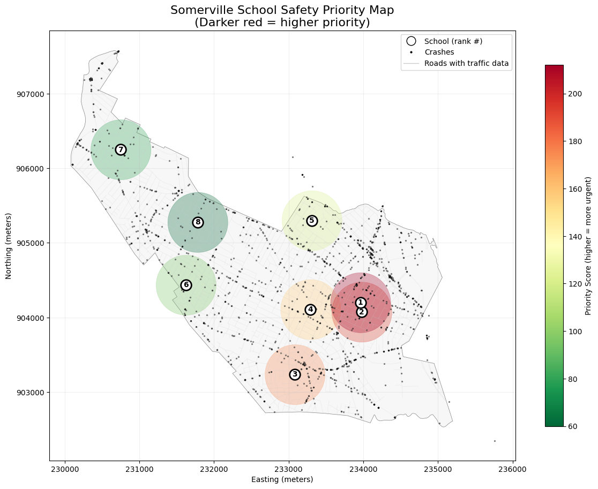
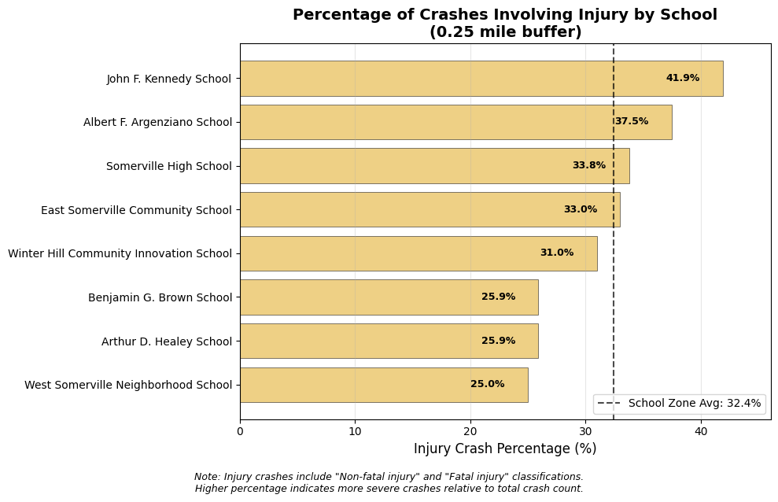
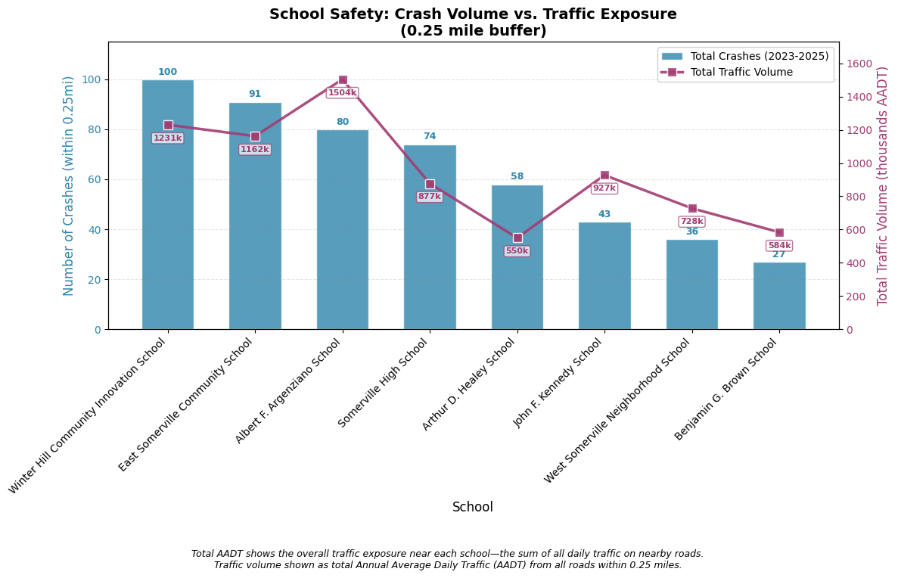
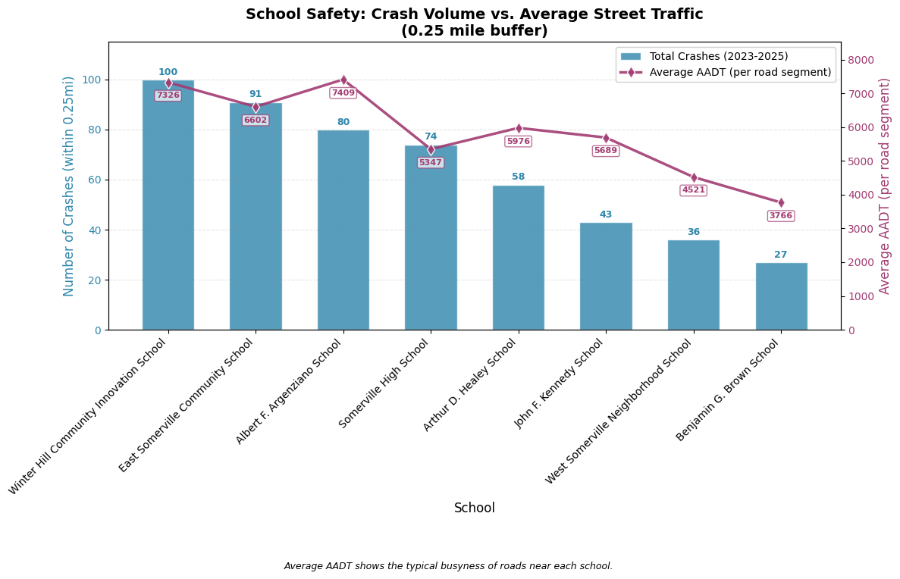

This notebook loads the processed data from Phase 1-2 and performs:
# %pip install "leafmap[maplibre]" # Uncomment to install leafmap if needed
# Cell 1: Setup and imports
import geopandas as gpd
import pandas as pd
import numpy as np
import matplotlib.pyplot as plt
import contextily as ctx
import os
import json
import ipywidgets as widgets
from ipyleaflet import Map, GeoJSON, GeoData, WidgetControl, basemaps
# Paths
data_processed = '../data/processed'
outputs = '../outputs'
# Cell 2: Load all datasets
crashes = gpd.read_file(os.path.join(data_processed, 'crashes_somerville_2023thru2025.geojson'))
schools = gpd.read_file(os.path.join(data_processed, 'somerville_schools_processed.geojson'))
traffic = gpd.read_file(os.path.join(data_processed, 'trafficvolume2024_somerville_processed.geojson'))
buffer_025 = gpd.read_file(os.path.join(data_processed, 'school_buffers_025mi.geojson'))
buffer_05 = gpd.read_file(os.path.join(data_processed, 'school_buffers_05mi.geojson'))
boundary = gpd.read_file(os.path.join(data_processed, 'somerville_boundary.geojson'))
# Cell 3: Quick CRS verification
print(f"Crashes CRS: {crashes.crs}")
print(f"Schools CRS: {schools.crs}")
print(f"Traffic CRS: {traffic.crs}")
print(f"Buffer 0.25mi CRS: {buffer_025.crs}")
print(f"Buffer 0.5mi CRS: {buffer_05.crs}")
print(f"Somerville CRS: {boundary.crs}")
Crashes CRS: EPSG:26986
Schools CRS: EPSG:26986
Traffic CRS: EPSG:26986
Buffer 0.25mi CRS: EPSG:26986
Buffer 0.5mi CRS: EPSG:26986
Somerville CRS: EPSG:26986
# Cell 4: INNER JOIN crashes to 0.25 mile school buffers to identify crashes within 0.25 miles of schools
crashes_in_025 = gpd.sjoin(
crashes,
buffer_025,
how='inner',
predicate='within'
)
print(f"✅ Found {len(crashes_in_025)} crashes within 0.25mi of schools")
print(f" ({len(crashes_in_025)/len(crashes)*100:.1f}% of all crashes)")
# Show first few
print("\nSample crashes in school zones:")
print(crashes_in_025[['Crash_Number', 'Crash_Date', 'Crash_Severity', 'school_name']].head())
print("🔍 Identifying crashes within 0.25 miles of schools...")
✅ Found 509 crashes within 0.25mi of schools
(29.6% of all crashes)
Sample crashes in school zones:
Crash_Number Crash_Date Crash_Severity \
7 5223266 06-Jan-2023 Non-fatal injury
10 5223265 08-Jan-2023 Property damage only (none injured)
11 5223268 08-Jan-2023 Non-fatal injury
13 5223273 09-Jan-2023 Unknown
21 5205084 13-Jan-2023 Non-fatal injury
school_name
7 Albert F. Argenziano School
10 Benjamin G. Brown School
11 Benjamin G. Brown School
13 Albert F. Argenziano School
21 East Somerville Community School
🔍 Identifying crashes within 0.25 miles of schools...
# Cell 5: Join crashes to 0.5 mile school buffers
print("🔍 Identifying crashes within 0.5 miles of schools...")
crashes_in_05 = gpd.sjoin(
crashes,
buffer_05,
how='inner',
predicate='within'
)
print(f"✅ Found {len(crashes_in_05)} crashes within 0.5mi of schools")
print(f" ({len(crashes_in_05)/len(crashes)*100:.1f}% of all crashes)")
# Show increase
increase = len(crashes_in_05) - len(crashes_in_025)
print(f"\n📈 Expanding to 0.5mi captures {increase} additional crashes, compared to {len(crashes_in_025)} crashes found within 0.25mi radius.")
🔍 Identifying crashes within 0.5 miles of schools...
✅ Found 2382 crashes within 0.5mi of schools
(138.3% of all crashes)
📈 Expanding to 0.5mi captures 1873 additional crashes, compared to 509 crashes found within 0.25mi radius.
crashes_in_025['Crash_Severity'].value_counts()
Crash_Severity
Property damage only (none injured) 328
Non-fatal injury 165
Unknown 16
Name: count, dtype: int64
# Cell 6: Crash counts by school (0.25 mile buffer)
school_crash_counts_025mi = crashes_in_025.groupby('school_name').size().reset_index(name='crashes_025mi')
school_crash_counts_025mi = school_crash_counts_025mi.sort_values('crashes_025mi', ascending=False).reset_index(drop=True)
print("📊 CRASH COUNTS BY SCHOOL (within 0.25 miles)")
print("=" * 60)
print(school_crash_counts_025mi.to_string(index=False))
# Calculate summary stats
print(f"\n🔖 Summary:")
print(f" Average crashes per school: {school_crash_counts_025mi['crashes_025mi'].mean():.1f}")
print(f" Median crashes per school: {school_crash_counts_025mi['crashes_025mi'].median():.0f}")
print(f" Highest: {school_crash_counts_025mi.iloc[0]['school_name']} ({school_crash_counts_025mi.iloc[0]['crashes_025mi']} crashes)")
print(f" Lowest: {school_crash_counts_025mi.iloc[-1]['school_name']} ({school_crash_counts_025mi.iloc[-1]['crashes_025mi']} crashes)")
display(school_crash_counts_025mi)
📊 CRASH COUNTS BY SCHOOL (within 0.25 miles)
============================================================
school_name crashes_025mi
Winter Hill Community Innovation School 100
East Somerville Community School 91
Albert F. Argenziano School 80
Somerville High School 74
Arthur D. Healey School 58
John F. Kennedy School 43
West Somerville Neighborhood School 36
Benjamin G. Brown School 27
🔖 Summary:
Average crashes per school: 63.6
Median crashes per school: 66
Highest: Winter Hill Community Innovation School (100 crashes)
Lowest: Benjamin G. Brown School (27 crashes)
| school_name | crashes_025mi | |
|---|---|---|
| 0 | Winter Hill Community Innovation School | 100 |
| 1 | East Somerville Community School | 91 |
| 2 | Albert F. Argenziano School | 80 |
| 3 | Somerville High School | 74 |
| 4 | Arthur D. Healey School | 58 |
| 5 | John F. Kennedy School | 43 |
| 6 | West Somerville Neighborhood School | 36 |
| 7 | Benjamin G. Brown School | 27 |
# Cell 7: Crash severity breakdown by school
if 'Crash_Severity' in crashes_in_025.columns:
# Create pivot table
severity_pivot_025mi = pd.crosstab(
crashes_in_025['school_name'],
crashes_in_025['Crash_Severity'],
margins=True,
margins_name='Total'
)
print("\n📊 CRASH SEVERITY BY SCHOOL (0.25 mile buffer)")
print("=" * 70)
print(severity_pivot_025mi)
# Calculate injury crash percentage
if 'Non-fatal injury' in severity_pivot_025mi.columns or 'Fatal injury' in severity_pivot_025mi.columns:
injury_cols = [col for col in severity_pivot_025mi.columns if 'injury' in col.lower() or 'fatal' in col.lower()]
if injury_cols:
severity_pivot_025mi['injury_pct'] = (severity_pivot_025mi[injury_cols].sum(axis=1) / severity_pivot_025mi['Total']) * 100
print("\n⚠️ Injury Crash Percentage:")
print(severity_pivot_025mi[['Total'] + injury_cols + ['injury_pct']].round(1))
📊 CRASH SEVERITY BY SCHOOL (0.25 mile buffer)
======================================================================
Crash_Severity Non-fatal injury \
school_name
Albert F. Argenziano School 30
Arthur D. Healey School 15
Benjamin G. Brown School 7
East Somerville Community School 30
John F. Kennedy School 18
Somerville High School 25
West Somerville Neighborhood School 9
Winter Hill Community Innovation School 31
Total 165
Crash_Severity Property damage only (none injured) \
school_name
Albert F. Argenziano School 44
Arthur D. Healey School 39
Benjamin G. Brown School 19
East Somerville Community School 61
John F. Kennedy School 24
Somerville High School 46
West Somerville Neighborhood School 26
Winter Hill Community Innovation School 69
Total 328
Crash_Severity Unknown Total
school_name
Albert F. Argenziano School 6 80
Arthur D. Healey School 4 58
Benjamin G. Brown School 1 27
East Somerville Community School 0 91
John F. Kennedy School 1 43
Somerville High School 3 74
West Somerville Neighborhood School 1 36
Winter Hill Community Innovation School 0 100
Total 16 509
⚠️ Injury Crash Percentage:
Crash_Severity Total Non-fatal injury injury_pct
school_name
Albert F. Argenziano School 80 30 37.5
Arthur D. Healey School 58 15 25.9
Benjamin G. Brown School 27 7 25.9
East Somerville Community School 91 30 33.0
John F. Kennedy School 43 18 41.9
Somerville High School 74 25 33.8
West Somerville Neighborhood School 36 9 25.0
Winter Hill Community Innovation School 100 31 31.0
Total 509 165 32.4
severity_pivot_025mi
| Crash_Severity | Non-fatal injury | Property damage only (none injured) | Unknown | Total | injury_pct |
|---|---|---|---|---|---|
| school_name | |||||
| Albert F. Argenziano School | 30 | 44 | 6 | 80 | 37.500000 |
| Arthur D. Healey School | 15 | 39 | 4 | 58 | 25.862069 |
| Benjamin G. Brown School | 7 | 19 | 1 | 27 | 25.925926 |
| East Somerville Community School | 30 | 61 | 0 | 91 | 32.967033 |
| John F. Kennedy School | 18 | 24 | 1 | 43 | 41.860465 |
| Somerville High School | 25 | 46 | 3 | 74 | 33.783784 |
| West Somerville Neighborhood School | 9 | 26 | 1 | 36 | 25.000000 |
| Winter Hill Community Innovation School | 31 | 69 | 0 | 100 | 31.000000 |
| Total | 165 | 328 | 16 | 509 | 32.416503 |
# Cell 8: Visual comparison of top schools (0.25 mile)
# Prepare data for plotting
if 'Crash_Severity' in crashes_in_025.columns:
# Get severity distribution for top schools
top_schools_list = ['Winter Hill Community Innovation School',
'East Somerville Community School',
'Albert F. Argenziano School']
# Filter data
top_data_025 = crashes_in_025[crashes_in_025['school_name'].isin(top_schools_list)]
# Severity categories
severity_categories = ['Property damage only (none injured)', 'Non-fatal injury']
# Count for each school
winter_hill_counts_025 = [
len(top_data_025[(top_data_025['school_name'] == top_schools_list[0]) &
(top_data_025['Crash_Severity'] == severity_categories[0])]),
len(top_data_025[(top_data_025['school_name'] == top_schools_list[0]) &
(top_data_025['Crash_Severity'] == severity_categories[1])])
]
east_somerville_counts_025 = [
len(top_data_025[(top_data_025['school_name'] == top_schools_list[1]) &
(top_data_025['Crash_Severity'] == severity_categories[0])]),
len(top_data_025[(top_data_025['school_name'] == top_schools_list[1]) &
(top_data_025['Crash_Severity'] == severity_categories[1])])
]
# Set up plot
x = np.arange(len(severity_categories))
width = 0.35
fig, ax = plt.subplots(figsize=(10, 6))
bars1 = ax.bar(x - width/2, winter_hill_counts_025, width, label='Winter Hill', color='darkred')
bars2 = ax.bar(x + width/2, east_somerville_counts_025, width, label='East Somerville', color='darkblue')
bars2 = ax.bar(x + width/2, east_somerville_counts_025, width, label='East Somerville', color='darkblue')
# Customize
ax.set_xlabel('Crash Severity')
ax.set_ylabel('Number of Crashes')
ax.set_title('Crash Severity Comparison: Top 2 Schools (0.25 mile buffer)')
ax.set_xticks(x)
ax.set_xticklabels(['Property Damage', 'Non-fatal Injury'])
ax.legend()
# Add value labels on bars
for bars in [bars1, bars2]:
for bar in bars:
height = bar.get_height()
ax.annotate(f'{height}',
xy=(bar.get_x() + bar.get_width() / 2, height),
xytext=(0, 3),
textcoords="offset points",
ha='center', va='bottom')
plt.tight_layout()
plt.show()

# Cell 9: Injury severity breakdown for top 3 schools (0.25 mile buffer)
# Using school zone average as baseline (crashes within 0.25mi of any school)
if 'Crash_Severity' in crashes_in_025.columns:
# Top 3 schools based on crash counts
top_schools_list = [
'Winter Hill Community Innovation School',
'East Somerville Community School',
'Albert F. Argenziano School'
]
top_schools_data_025 = crashes_in_025[crashes_in_025['school_name'].isin(top_schools_list)]
# Create severity breakdown with suffix
severity_top_025 = pd.crosstab(
top_schools_data_025['school_name'],
top_schools_data_025['Crash_Severity']
)
# Add suffix to column names for clarity
severity_top_025.columns = [f"{col}_025" for col in severity_top_025.columns]
# Add total column
severity_top_025['Total_025'] = severity_top_025.sum(axis=1)
# Calculate injury percentage
injury_cols_025 = [col for col in severity_top_025.columns if 'Non-fatal injury' in col or 'Fatal' in col]
if injury_cols_025:
severity_top_025['Injury_Count_025'] = severity_top_025[injury_cols_025].sum(axis=1)
severity_top_025['Injury_Pct_025'] = (severity_top_025['Injury_Count_025'] / severity_top_025['Total_025'] * 100).round(1)
print("📊 TOP 3 SCHOOLS - CRASH SEVERITY BREAKDOWN (0.25 mile buffer)")
print("=" * 80)
print(severity_top_025)
# Calculate SCHOOL ZONE AVERAGE (crashes near ANY school) - Baseline A
school_zone_avg_025 = (crashes_in_025['Crash_Severity'].str.contains('injury', case=False, na=False).sum() /
len(crashes_in_025)) * 100
print(f"\n📊 SCHOOL ZONE AVERAGE (0.25mi, all 8 schools combined): {school_zone_avg_025:.1f}%")
# Compare each top school to the school zone average
print("\n📈 Comparison to school zone average:")
for school in top_schools_list:
if school in severity_top_025.index:
school_rate = severity_top_025.loc[school, 'Injury_Pct_025']
diff = school_rate - school_zone_avg_025
arrow = "🔺 higher" if diff > 0 else "🔻 lower" if diff < 0 else "➡️ same"
print(f" {school}: {school_rate:.1f}% ({arrow} by {abs(diff):.1f}%)")
else:
print("⚠️ Crash_Severity column not available in joined data")
📊 TOP 3 SCHOOLS - CRASH SEVERITY BREAKDOWN (0.25 mile buffer)
================================================================================
Non-fatal injury_025 \
school_name
Albert F. Argenziano School 30
East Somerville Community School 30
Winter Hill Community Innovation School 31
Property damage only (none injured)_025 \
school_name
Albert F. Argenziano School 44
East Somerville Community School 61
Winter Hill Community Innovation School 69
Unknown_025 Total_025 \
school_name
Albert F. Argenziano School 6 80
East Somerville Community School 0 91
Winter Hill Community Innovation School 0 100
Injury_Count_025 Injury_Pct_025
school_name
Albert F. Argenziano School 30 37.5
East Somerville Community School 30 33.0
Winter Hill Community Innovation School 31 31.0
📊 SCHOOL ZONE AVERAGE (0.25mi, all 8 schools combined): 32.4%
📈 Comparison to school zone average:
Winter Hill Community Innovation School: 31.0% (🔻 lower by 1.4%)
East Somerville Community School: 33.0% (🔺 higher by 0.6%)
Albert F. Argenziano School: 37.5% (🔺 higher by 5.1%)
(crashes_in_025['Crash_Severity'].str.contains('injury', case=False, na=False).sum() / len(crashes_in_025)) * 100
np.float64(32.416502946954814)
This will help us understand exposure—schools near high-traffic roads should expect more crashes simply because more cars are passing through.
# Cell 10: Traffic volume within 0.25 mile of top schools
# Spatial join: traffic counts within school buffers
traffic_in_025 = gpd.sjoin(
traffic,
buffer_025,
how='inner',
predicate='intersects'
)
print(f"📊 TRAFFIC VOLUME NEAR TOP SCHOOLS (0.25 mile buffer)")
print("=" * 80)
# Focus on top 3 schools
for school in top_schools_list:
# Get traffic counts near this school
school_traffic = traffic_in_025[traffic_in_025['school_name'] == school]
if len(school_traffic) > 0 and 'AADT' in school_traffic.columns:
avg_aadt = school_traffic['AADT'].mean()
max_aadt = school_traffic['AADT'].max()
count_locations = len(school_traffic)
print(f"\n🏫 {school}")
print(f" Traffic count locations nearby: {count_locations}")
print(f" Average AADT: {avg_aadt:,.0f} vehicles/day")
print(f" Maximum AADT: {max_aadt:,.0f} vehicles/day")
else:
print(f"\n🏫 {school}")
print(f" No traffic count data within 0.25mi")
📊 TRAFFIC VOLUME NEAR TOP SCHOOLS (0.25 mile buffer)
================================================================================
🏫 Winter Hill Community Innovation School
Traffic count locations nearby: 168
Average AADT: 7,326 vehicles/day
Maximum AADT: 51,451 vehicles/day
🏫 East Somerville Community School
Traffic count locations nearby: 176
Average AADT: 6,602 vehicles/day
Maximum AADT: 50,545 vehicles/day
🏫 Albert F. Argenziano School
Traffic count locations nearby: 203
Average AADT: 7,409 vehicles/day
Maximum AADT: 22,890 vehicles/day
# Cell 11: Combined priority table (crashes + traffic)
# Get crash totals for all schools
crash_totals = crashes_in_025.groupby('school_name').size().reset_index(name='crashes_025mi')
# Get injury counts for all schools
if 'Crash_Severity' in crashes_in_025.columns:
injury_counts = crashes_in_025[crashes_in_025['Crash_Severity'].str.contains('injury', case=False, na=False)] \
.groupby('school_name').size().reset_index(name='injury_crashes_025mi')
else:
injury_counts = pd.DataFrame({'school_name': crash_totals['school_name'], 'injury_crashes_025mi': 0})
# Get traffic summary for all schools
traffic_summary = traffic_in_025.groupby('school_name').agg(
traffic_count_locations=('AADT', 'count'),
avg_aadt=('AADT', 'mean'),
max_aadt=('AADT', 'max')
).round(0).reset_index()
# Merge everything
priority_table = crash_totals.merge(injury_counts, on='school_name', how='left')
priority_table = priority_table.merge(traffic_summary, on='school_name', how='left')
# Fill NaN values (schools with no traffic data)
priority_table = priority_table.fillna(0)
# Calculate priority score (injuries weighted 3x, crashes 1x, traffic exposure as factor)
priority_table['priority_score'] = (
priority_table['injury_crashes_025mi'] * 3 +
(priority_table['crashes_025mi'] - priority_table['injury_crashes_025mi']) * 1
)
# Sort and rank
priority_table = priority_table.sort_values('priority_score', ascending=False)
priority_table['rank'] = range(1, len(priority_table) + 1)
print("🏫 SCHOOL SAFETY PRIORITY RANKING (with traffic context)")
print("=" * 90)
print(priority_table[['rank', 'school_name', 'crashes_025mi', 'injury_crashes_025mi',
'avg_aadt', 'max_aadt', 'priority_score']].to_string(index=False))
🏫 SCHOOL SAFETY PRIORITY RANKING (with traffic context)
==========================================================================================
rank school_name crashes_025mi injury_crashes_025mi avg_aadt max_aadt priority_score
1 Winter Hill Community Innovation School 100 31 7326.0 51451 162
2 East Somerville Community School 91 30 6602.0 50545 151
3 Albert F. Argenziano School 80 30 7409.0 22890 140
4 Somerville High School 74 25 5347.0 20556 124
5 Arthur D. Healey School 58 15 5976.0 156877 88
6 John F. Kennedy School 43 18 5689.0 17686 79
7 West Somerville Neighborhood School 36 9 4521.0 9363 54
8 Benjamin G. Brown School 27 7 3766.0 13118 41
traffic_in_025.head()
| OBJECTID | route_id | from_measure | to_measure | Route_System | Route_Number | Route_Direction | City | County | Hwy_Dist | ... | Year_SUT | Year_CT | Length | Record_ID | Source | Shape__Length | SHAPE | geometry | index_right | school_name | |
|---|---|---|---|---|---|---|---|---|---|---|---|---|---|---|---|---|---|---|---|---|---|
| 7 | 2643992 | I93 NB | 20.566400 | 20.908627 | I | 93 | NB | 274 | 17 | 4 | ... | NaN | NaN | 0.342227 | 233699.905295.NW.55.93 | B | 550.761506 | None | LINESTRING (233893.462 905100.712, 233893.46 9... | 1 | Arthur D. Healey School |
| 8 | 2647342 | L107021 NB | 0.000000 | 0.064591 | L | 107021 | NB | 274 | 17 | 4 | ... | NaN | NaN | 0.064591 | 233965.904291.NE.10.107021 | None | 103.950081 | None | LINESTRING (233938.435 904247.388, 233969.341 ... | 3 | East Somerville Community School |
| 8 | 2647342 | L107021 NB | 0.000000 | 0.064591 | L | 107021 | NB | 274 | 17 | 4 | ... | NaN | NaN | 0.064591 | 233965.904291.NE.10.107021 | None | 103.950081 | None | LINESTRING (233938.435 904247.388, 233969.341 ... | 7 | Winter Hill Community Innovation School |
| 9 | 2647343 | L107021 NB | 0.064591 | 0.087255 | L | 107021 | NB | 274 | 17 | 4 | ... | NaN | NaN | 0.022663 | 234002.904350.NE.36.107021 | None | 36.473102 | None | LINESTRING (233992.77 904336.002, 234012.169 9... | 3 | East Somerville Community School |
| 9 | 2647343 | L107021 NB | 0.064591 | 0.087255 | L | 107021 | NB | 274 | 17 | 4 | ... | NaN | NaN | 0.022663 | 234002.904350.NE.36.107021 | None | 36.473102 | None | LINESTRING (233992.77 904336.002, 234012.169 9... | 7 | Winter Hill Community Innovation School |
5 rows × 50 columns
# Visual check - Crashes with 0.25 mile buffers
fig, ax = plt.subplots(figsize=(10, 8))
# Plot Somerville boundary
boundary.plot(ax=ax, alpha=0.2, color='lightgray', edgecolor='black', linewidth=1)
# Plot school buffers
buffer_025.plot(ax=ax, alpha=0.2, color='lightblue', edgecolor='blue', linewidth=0.5)
# Plot crashes
crashes.plot(ax=ax, markersize=2, color='grey', alpha=0.5, label='Crashes')
# Plot schools for reference
schools.plot(ax=ax, markersize=50, color='darkred', marker='*', label='Schools')
ax.set_title('Crashes Map with 0.25 Mile School Buffers', fontsize=14)
ax.legend()
ax.set_xlabel('Easting (meters)')
ax.set_ylabel('Northing (meters)')
ax.grid(True, alpha=0.3)
plt.tight_layout()
plt.show()
print(f"Total crashes plotted: {len(crashes)}")
print(f"Crashes within buffers (spatial join result): {len(crashes_in_025)}")

Total crashes plotted: 1722
Crashes within buffers (spatial join result): 509
# Visualize traffic volume data by itself
fig, ax = plt.subplots(figsize=(8, 6))
# Plot just the traffic lines
if len(traffic) > 0:
traffic.plot(ax=ax, linewidth=1.5, color='purple', alpha=0.7)
ax.set_title('Traffic Volume Data - Road Segments with AADT (SOMERVILLE)', fontsize=14)
else:
ax.text(0.5, 0.5, 'No traffic data loaded', transform=ax.transAxes, fontsize=14, color='red')
# Add some context with a light gray background
ax.set_xlabel('Easting (meters)')
ax.set_ylabel('Northing (meters)')
ax.grid(True, alpha=0.3)
plt.tight_layout()
plt.show()
print(f"Total traffic features: {len(traffic)}")
print(f"Geometry types: {traffic.geometry.type.value_counts()}")
print(f"AADT range: {traffic['AADT'].min():,.0f} - {traffic['AADT'].max():,.0f}")

Total traffic features: 2731
Geometry types: LineString 2718
Name: count, dtype: int64
AADT range: 739 - 172,550
# Cell 12: Aggregate traffic exposure by school
print(f"Total traffic-buffer intersections: {len(traffic_in_025)}")
# Calculate traffic exposure per school
school_traffic_exposure_025mi = traffic_in_025.groupby('school_name').agg({
'AADT': ['count', 'mean', 'max', 'sum']
}).round(0)
# Flatten column names
school_traffic_exposure_025mi.columns = ['segment_count', 'avg_aadt', 'max_aadt', 'total_aadt']
school_traffic_exposure_025mi = school_traffic_exposure_025mi.reset_index()
print("\n📊 TRAFFIC EXPOSURE BY SCHOOL (0.25 mile buffer)")
print("=" * 70)
print(school_traffic_exposure_025mi.to_string(index=False))
# Merge with crash data
if 'priority_table' in locals():
priority_table = priority_table.merge(
school_traffic_exposure_025mi,
on='school_name',
how='left'
).fillna(0)
Total traffic-buffer intersections: 1282
📊 TRAFFIC EXPOSURE BY SCHOOL (0.25 mile buffer)
======================================================================
school_name segment_count avg_aadt max_aadt total_aadt
Albert F. Argenziano School 203 7409.0 22890 1503997
Arthur D. Healey School 92 5976.0 156877 549837
Benjamin G. Brown School 155 3766.0 13118 583794
East Somerville Community School 176 6602.0 50545 1161980
John F. Kennedy School 163 5689.0 17686 927332
Somerville High School 164 5347.0 20556 876907
West Somerville Neighborhood School 161 4521.0 9363 727821
Winter Hill Community Innovation School 168 7326.0 51451 1230836
# Test: Visualize one school's traffic intersections
test_school = 'Winter Hill Community Innovation School'
test_buffer = buffer_025[buffer_025['school_name'] == test_school].geometry.iloc[0]
test_traffic = traffic[traffic.intersects(test_buffer)]
fig, ax = plt.subplots(figsize=(10, 8))
boundary.plot(ax=ax, alpha=0.5, color='lightgray')
gpd.GeoSeries([test_buffer]).plot(ax=ax, alpha=0.3, color='lightblue', edgecolor='blue')
test_traffic.plot(ax=ax, linewidth=1, color='purple')
schools[schools['school_name'] == test_school].plot(ax=ax, markersize=100, color='green', marker='*')
ax.set_title(f'Traffic Segments within 0.25 miles of {test_school}')
plt.show()
print(f"Traffic segments intersecting this buffer (Winter Hill Community Innovation School): {len(test_traffic)}")

Traffic segments intersecting this buffer (Winter Hill Community Innovation School): 168
display(school_crash_counts_025mi)
| school_name | crashes_025mi | |
|---|---|---|
| 0 | Winter Hill Community Innovation School | 100 |
| 1 | East Somerville Community School | 91 |
| 2 | Albert F. Argenziano School | 80 |
| 3 | Somerville High School | 74 |
| 4 | Arthur D. Healey School | 58 |
| 5 | John F. Kennedy School | 43 |
| 6 | West Somerville Neighborhood School | 36 |
| 7 | Benjamin G. Brown School | 27 |
school_traffic_exposure_025mi
| school_name | segment_count | avg_aadt | max_aadt | total_aadt | |
|---|---|---|---|---|---|
| 0 | Albert F. Argenziano School | 203 | 7409.0 | 22890 | 1503997 |
| 1 | Arthur D. Healey School | 92 | 5976.0 | 156877 | 549837 |
| 2 | Benjamin G. Brown School | 155 | 3766.0 | 13118 | 583794 |
| 3 | East Somerville Community School | 176 | 6602.0 | 50545 | 1161980 |
| 4 | John F. Kennedy School | 163 | 5689.0 | 17686 | 927332 |
| 5 | Somerville High School | 164 | 5347.0 | 20556 | 876907 |
| 6 | West Somerville Neighborhood School | 161 | 4521.0 | 9363 | 727821 |
| 7 | Winter Hill Community Innovation School | 168 | 7326.0 | 51451 | 1230836 |
# Cell 13: Combine crash and traffic for final priority ranking
# Use the aggregated crash counts per school
# Now merge with traffic data
priority_final = school_crash_counts_025mi.merge(
school_traffic_exposure_025mi,
on='school_name',
how='left'
)
# Calculate crash rate per 10,000 AADT (normalized for exposure)
priority_final['crashes_per_10k_aadt'] = (
priority_final['crashes_025mi'] / (priority_final['total_aadt'] / 10000)
).round(2)
# Composite priority score (crashes × traffic exposure)
priority_final['priority_score'] = (
priority_final['crashes_025mi'] * 2 + # Crash count weight
(priority_final['total_aadt'] / 100000) * 1 # Traffic exposure weight
).round(0)
# Sort and rank
priority_final = priority_final.sort_values('priority_score', ascending=False)
priority_final['rank'] = range(1, len(priority_final) + 1)
print("\n🏫 FINAL SCHOOL SAFETY PRIORITY RANKING")
print("=" * 90)
display_cols = ['rank', 'school_name', 'crashes_025mi', 'total_aadt',
'crashes_per_10k_aadt', 'priority_score']
🏫 FINAL SCHOOL SAFETY PRIORITY RANKING
==========================================================================================
injury_counts = crashes_in_025[crashes_in_025['Crash_Severity'].str.contains('injury', case=False, na=False)] \
.groupby('school_name').size().reset_index(name='injury_crashes')
# Merge with priority_final
priority_final = priority_final.merge(
injury_counts,
on='school_name',
how='left'
).fillna(0)
priority_final['injury_pct'] = (priority_final['injury_crashes'] / priority_final['crashes_025mi'] * 100).round(1)
print(priority_final[display_cols].to_string(index=False))
display(priority_final)
rank school_name crashes_025mi total_aadt crashes_per_10k_aadt priority_score
1 Winter Hill Community Innovation School 100 1230836 0.81 212.0
2 East Somerville Community School 91 1161980 0.78 194.0
3 Albert F. Argenziano School 80 1503997 0.53 175.0
4 Somerville High School 74 876907 0.84 157.0
5 Arthur D. Healey School 58 549837 1.05 121.0
6 John F. Kennedy School 43 927332 0.46 95.0
7 West Somerville Neighborhood School 36 727821 0.49 79.0
8 Benjamin G. Brown School 27 583794 0.46 60.0
| school_name | crashes_025mi | segment_count | avg_aadt | max_aadt | total_aadt | crashes_per_10k_aadt | priority_score | rank | injury_crashes | injury_pct | |
|---|---|---|---|---|---|---|---|---|---|---|---|
| 0 | Winter Hill Community Innovation School | 100 | 168 | 7326.0 | 51451 | 1230836 | 0.81 | 212.0 | 1 | 31 | 31.0 |
| 1 | East Somerville Community School | 91 | 176 | 6602.0 | 50545 | 1161980 | 0.78 | 194.0 | 2 | 30 | 33.0 |
| 2 | Albert F. Argenziano School | 80 | 203 | 7409.0 | 22890 | 1503997 | 0.53 | 175.0 | 3 | 30 | 37.5 |
| 3 | Somerville High School | 74 | 164 | 5347.0 | 20556 | 876907 | 0.84 | 157.0 | 4 | 25 | 33.8 |
| 4 | Arthur D. Healey School | 58 | 92 | 5976.0 | 156877 | 549837 | 1.05 | 121.0 | 5 | 15 | 25.9 |
| 5 | John F. Kennedy School | 43 | 163 | 5689.0 | 17686 | 927332 | 0.46 | 95.0 | 6 | 18 | 41.9 |
| 6 | West Somerville Neighborhood School | 36 | 161 | 4521.0 | 9363 | 727821 | 0.49 | 79.0 | 7 | 9 | 25.0 |
| 7 | Benjamin G. Brown School | 27 | 155 | 3766.0 | 13118 | 583794 | 0.46 | 60.0 | 8 | 7 | 25.9 |
# Cell 14: Merge priority scores with school geometries
# Ensure both are in the same CRS
schools_priority_ranks = schools.merge(
priority_final[['school_name', 'priority_score', 'crashes_025mi', 'avg_aadt','total_aadt', 'crashes_per_10k_aadt', 'rank', 'injury_crashes', 'injury_pct']],
on='school_name',
how='left'
)
print("✅ Schools now have priority attributes")
print(schools_priority_ranks[['school_name', 'rank', 'priority_score']].head())
# Create a color map for priority scores
cmap = plt.cm.RdYlGn_r # Red (high) to Green (low) reversed
norm = plt.Normalize(vmin=priority_final['priority_score'].min(),
vmax=priority_final['priority_score'].max())
print(f"Priority score range: {priority_final['priority_score'].min()} - {priority_final['priority_score'].max()}")
display(schools_priority_ranks)
✅ Schools now have priority attributes
school_name rank priority_score
0 Somerville High School 4 157.0
1 Arthur D. Healey School 5 121.0
2 Benjamin G. Brown School 8 60.0
3 East Somerville Community School 2 194.0
4 Albert F. Argenziano School 3 175.0
Priority score range: 60.0 - 212.0
| school_name | latitude | longitude | address | confidence | geometry | priority_score | crashes_025mi | avg_aadt | total_aadt | crashes_per_10k_aadt | rank | injury_crashes | injury_pct | |
|---|---|---|---|---|---|---|---|---|---|---|---|---|---|---|
| 0 | Somerville High School | 42.386770 | -71.095694 | Somerville High School, 81 Highland Avenue, So... | 0 | POINT (233292.393 904108.027) | 157.0 | 74 | 5347.0 | 876907 | 0.84 | 4 | 25 | 33.8 |
| 1 | Arthur D. Healey School | 42.397499 | -71.095418 | 5 Meacham Street, Somerville, MA 02145, United... | 0 | POINT (233309.399 905299.884) | 121.0 | 58 | 5976.0 | 549837 | 1.05 | 5 | 15 | 25.9 |
| 2 | Benjamin G. Brown School | 42.397359 | -71.113994 | 201 Willow Avenue, Somerville, MA 02144, Unite... | 0 | POINT (231780.132 905277.243) | 60.0 | 27 | 3766.0 | 583794 | 0.46 | 8 | 7 | 25.9 |
| 3 | East Somerville Community School | 42.386437 | -71.087368 | 50 Cross Street, Somerville, MA 02145, United ... | 0 | POINT (233978.089 904074.412) | 194.0 | 91 | 6602.0 | 1161980 | 0.78 | 2 | 30 | 33.0 |
| 4 | Albert F. Argenziano School | 42.378928 | -71.098294 | 290 Washington Street, Somerville, MA 02143, U... | 0 | POINT (233082.409 903236.028) | 175.0 | 80 | 7409.0 | 1503997 | 0.53 | 3 | 30 | 37.5 |
| 5 | John F. Kennedy School | 42.389795 | -71.115946 | 5 Cherry Street, Somerville, MA 02144, United ... | 0 | POINT (231623.223 904436.357) | 95.0 | 43 | 5689.0 | 927332 | 0.46 | 6 | 18 | 41.9 |
| 6 | West Somerville Neighborhood School | 42.406166 | -71.126467 | 177 Powder House Boulevard, Somerville, MA 021... | 0 | POINT (230748.96 906250.945) | 79.0 | 36 | 4521.0 | 727821 | 0.49 | 7 | 9 | 25.0 |
| 7 | Winter Hill Community Innovation School | 42.387574 | -71.087559 | 33 Cross Street, Somerville, MA 02145, United ... | 0 | POINT (233961.792 904200.574) | 212.0 | 100 | 7326.0 | 1230836 | 0.81 | 1 | 31 | 31.0 |
# Cell 14.4: Add school buffers colored by priority
fig, ax = plt.subplots(figsize=(9, 7))
# Plot Somerville boundary
boundary.plot(ax=ax, color='#f0f0f0', edgecolor='black', linewidth=0.5, alpha=0.5)
# Plot traffic segments (light gray, background)
traffic.plot(ax=ax, linewidth=1, color="#cccccc", alpha=0.5)
# Plot buffers colored by priority score
for idx, row in schools_priority_ranks.iterrows():
school_buffer = buffer_025[buffer_025['school_name'] == row['school_name']]
if len(school_buffer) > 0:
color = cmap(norm(row['priority_score']))
school_buffer.plot(
ax=ax,
color=color,
alpha=0.3,
edgecolor=color,
linewidth=0.5
)
# Add a colorbar to explain the colors
sm = plt.cm.ScalarMappable(cmap=cmap, norm=norm)
sm.set_array([])
cbar = plt.colorbar(sm, ax=ax, shrink=0.7)
cbar.set_label('Priority Score (higher = more urgent)')
ax.set_title('School Buffers Colored by Priority Score', fontsize=16)
ax.set_xlabel('Easting (meters)')
ax.set_ylabel('Northing (meters)')
ax.grid(True, alpha=0.2)
plt.tight_layout()
plt.show()

# Cell 14.5: Add crash points
fig, ax = plt.subplots(figsize=(10, 8))
# Plot Somerville boundary
boundary.plot(ax=ax, color='#f0f0f0', edgecolor='black', linewidth=0.5, alpha=0.5)
# Plot traffic segments (light gray, background)
traffic.plot(ax=ax, linewidth=0.5, color='#cccccc', alpha=0.3)
# Plot buffers colored by priority score
for idx, row in schools_priority_ranks.iterrows():
school_buffer = buffer_025[buffer_025['school_name'] == row['school_name']]
if len(school_buffer) > 0:
color = cmap(norm(row['priority_score']))
school_buffer.plot(
ax=ax,
color=color,
alpha=0.3,
edgecolor=color,
linewidth=0.5
)
# Plot crash points (small, semi-transparent)
crashes.plot(ax=ax, markersize=1, color='black', alpha=0.4, label='Crashes (2023-2025)')
# Add colorbar
sm = plt.cm.ScalarMappable(cmap=cmap, norm=norm)
sm.set_array([])
cbar = plt.colorbar(sm, ax=ax, shrink=0.7)
cbar.set_label('Priority Score (higher = more urgent)')
ax.set_title('Layer 4: Adding Crash Points', fontsize=16)
ax.set_xlabel('Easting (meters)')
ax.set_ylabel('Northing (meters)')
ax.grid(True, alpha=0.2)
ax.legend(loc='upper right')
plt.tight_layout()
plt.show()

# Cell 14.6: Add school points with rank labels - FINAL MAP
fig, ax = plt.subplots(figsize=(12, 10))
# Plot Somerville boundary
boundary.plot(ax=ax, color='#f0f0f0', edgecolor='black', linewidth=0.5, alpha=0.5)
# Plot traffic segments (light gray, background)
traffic.plot(ax=ax, linewidth=0.5, color='#cccccc', alpha=0.3)
# Plot buffers colored by priority score
for idx, row in schools_priority_ranks.iterrows():
school_buffer = buffer_025[buffer_025['school_name'] == row['school_name']]
if len(school_buffer) > 0:
color = cmap(norm(row['priority_score']))
school_buffer.plot(
ax=ax,
color=color,
alpha=0.3,
edgecolor=color,
linewidth=0.5
)
# Plot crash points
crashes.plot(ax=ax, markersize=2, color='black', alpha=0.4, label='Crashes (2023-2025)')
# Plot schools with rank labels
for idx, row in schools_priority_ranks.iterrows():
# Plot school point
ax.scatter(
row.geometry.x,
row.geometry.y,
s=200,
c='white',
edgecolor='black',
linewidth=2,
zorder=5
)
# Add rank number inside
ax.annotate(
str(int(row['rank'])),
(row.geometry.x, row.geometry.y),
fontsize=10,
fontweight='bold',
ha='center',
va='center',
zorder=6
)
# Add colorbar
sm = plt.cm.ScalarMappable(cmap=cmap, norm=norm)
sm.set_array([])
cbar = plt.colorbar(sm, ax=ax, shrink=0.7)
cbar.set_label('Priority Score (higher = more urgent)')
# Create custom legend for school points
from matplotlib.lines import Line2D
legend_elements = [
Line2D([0], [0], marker='o', color='w', markerfacecolor='white',
markeredgecolor='black', markersize=12, label='School (rank #)'),
Line2D([0], [0], marker='o', color='w', markerfacecolor='black',
markersize=4, alpha=1, label='Crashes'),
Line2D([0], [0], color='#cccccc', linewidth=1, alpha=1, label='Roads with traffic data')
]
ax.legend(handles=legend_elements, loc='upper right')
ax.set_title('Somerville School Safety Priority Map\n(Darker red = higher priority)', fontsize=16)
ax.set_xlabel('Easting (meters)')
ax.set_ylabel('Northing (meters)')
ax.grid(True, alpha=0.2)
plt.tight_layout()
# Save final map
#plt.savefig('../outputs/somerville_school_priority_final.png', dpi=300, bbox_inches='tight')
plt.show()

crashes.shape
(1722, 26)
priority_final
| school_name | crashes_025mi | segment_count | avg_aadt | max_aadt | total_aadt | crashes_per_10k_aadt | priority_score | rank | injury_crashes | injury_pct | |
|---|---|---|---|---|---|---|---|---|---|---|---|
| 0 | Winter Hill Community Innovation School | 100 | 168 | 7326.0 | 51451 | 1230836 | 0.81 | 212.0 | 1 | 31 | 31.0 |
| 1 | East Somerville Community School | 91 | 176 | 6602.0 | 50545 | 1161980 | 0.78 | 194.0 | 2 | 30 | 33.0 |
| 2 | Albert F. Argenziano School | 80 | 203 | 7409.0 | 22890 | 1503997 | 0.53 | 175.0 | 3 | 30 | 37.5 |
| 3 | Somerville High School | 74 | 164 | 5347.0 | 20556 | 876907 | 0.84 | 157.0 | 4 | 25 | 33.8 |
| 4 | Arthur D. Healey School | 58 | 92 | 5976.0 | 156877 | 549837 | 1.05 | 121.0 | 5 | 15 | 25.9 |
| 5 | John F. Kennedy School | 43 | 163 | 5689.0 | 17686 | 927332 | 0.46 | 95.0 | 6 | 18 | 41.9 |
| 6 | West Somerville Neighborhood School | 36 | 161 | 4521.0 | 9363 | 727821 | 0.49 | 79.0 | 7 | 9 | 25.0 |
| 7 | Benjamin G. Brown School | 27 | 155 | 3766.0 | 13118 | 583794 | 0.46 | 60.0 | 8 | 7 | 25.9 |
# Cell 15.1: Injury Rate Comparison Bar Chart
# Sort by injury rate for better visualization
injury_chart_data = priority_final.sort_values('injury_pct', ascending=True)
# Create figure
fig, ax = plt.subplots(figsize=(10, 6))
# Horizontal bar chart
bars = ax.barh(
injury_chart_data['school_name'],
injury_chart_data['injury_pct'],
color="#e7bd52", # Red color for injury
alpha=0.7,
edgecolor='black',
linewidth=0.5
)
# Add value labels INSIDE the bars at the right end
for i, (bar, pct) in enumerate(zip(bars, injury_chart_data['injury_pct'])):
# Calculate label position (inside bar, near the end)
label_x = bar.get_width() - 2 # 2% from the right edge
# If bar is too small, place label at end but ensure visibility
if bar.get_width() < 5:
label_x = bar.get_width() - 0.5
ax.text(
label_x, # Position inside the bar
bar.get_y() + bar.get_height()/2,
f'{pct:.1f}%',
va='center',
ha='right', # Right-align text so it reads from inside
fontsize=9,
fontweight='bold',
color='black' # White text on dark bars
)
# Add vertical line for citywide average (if available)
if 'school_zone_avg_025' in locals() or 'school_zone_avg_025' in globals():
ax.axvline(
x=school_zone_avg_025,
color='black',
linestyle='--',
linewidth=1.5,
alpha=0.7,
label=f'School Zone Avg: {school_zone_avg_025:.1f}%'
)
ax.legend(loc='lower right')
# Customize
ax.set_xlabel('Injury Crash Percentage (%)', fontsize=12)
ax.set_ylabel('')
ax.set_title('Percentage of Crashes Involving Injury by School\n(0.25 mile buffer)', fontsize=14, fontweight='bold')
ax.grid(True, axis='x', alpha=0.3)
# Set x-axis limit to give some breathing room
max_pct = injury_chart_data['injury_pct'].max()
ax.set_xlim(0, max_pct * 1.1)
# Add a note about data context
plt.figtext(
0.5, -0.05,
'Note: Injury crashes include "Non-fatal injury" and "Fatal injury" classifications.\n'
'Higher percentage indicates more severe crashes relative to total crash count.',
ha='center', fontsize=9, style='italic'
)
plt.tight_layout()
plt.savefig('../outputs/injury_rate_among_schools.png', dpi=300, bbox_inches='tight')
plt.show()

print(crashes.shape)
total_crashes = crashes.copy()
print(total_crashes.shape)
(1722, 26)
(1722, 26)
# Cell 15.2: Crash + Traffic Combo Chart
# Prepare data sorted by priority for consistent ordering
combo_data = priority_final.sort_values('priority_score', ascending=False).copy()
# Convert total_aadt to thousands for readability
combo_data['total_aadt_thousands'] = combo_data['total_aadt'] / 1000
# Create figure and primary axis
fig, ax1 = plt.subplots(figsize=(12, 7))
# Color palette (more harmonious)
crash_color = '#2E86AB' # Soft blue
traffic_color = '#A23B72' # Muted purple
highlight_color = '#F18F01' # Warm orange for accents
# Bar chart for crashes (primary axis)
x_pos = np.arange(len(combo_data))
width = 0.6
bars = ax1.bar(
x_pos,
combo_data['crashes_025mi'],
width,
color=crash_color,
alpha=0.8,
edgecolor='white',
linewidth=1,
label='Total Crashes (2023-2025)'
)
# Customize primary axis
ax1.set_xlabel('School', fontsize=12)
ax1.set_ylabel('Number of Crashes (within 0.25mi)', fontsize=12, color=crash_color)
ax1.tick_params(axis='y', labelcolor=crash_color)
ax1.set_xticks(x_pos)
ax1.set_xticklabels(combo_data['school_name'], rotation=45, ha='right', fontsize=10)
ax1.grid(True, axis='y', alpha=0.2, linestyle='--', color='gray')
# Set y-axis to start at 0
ax1.set_ylim(0, max(combo_data['crashes_025mi']) * 1.15)
# Create secondary axis for traffic
ax2 = ax1.twinx()
# Line plot for traffic (secondary axis)
line = ax2.plot(
x_pos,
combo_data['total_aadt_thousands'],
color=traffic_color,
marker='s', # Square markers for distinction
linewidth=2.5,
markersize=8,
label='Total Traffic Volume',
alpha=0.9,
markeredgecolor='white',
markeredgewidth=1
)
# Customize secondary axis
ax2.set_ylabel('Total Traffic Volume (thousands AADT)', fontsize=12, color=traffic_color)
ax2.tick_params(axis='y', labelcolor=traffic_color)
ax2.set_ylim(0, max(combo_data['total_aadt_thousands']) * 1.15)
# Add value labels on bars
for i, (bar, crashes) in enumerate(zip(bars, combo_data['crashes_025mi'])):
ax1.text(
bar.get_x() + bar.get_width()/2,
crashes + 1,
str(int(crashes)),
ha='center',
va='bottom',
fontsize=9,
fontweight='bold',
color=crash_color
)
# Add traffic value labels
for i, (x, traffic_val) in enumerate(zip(x_pos, combo_data['total_aadt_thousands'])):
ax2.annotate(
f'{traffic_val:.0f}k',
(x, traffic_val),
xytext=(0, -15), # Offset below the point
textcoords='offset points',
ha='center',
fontsize=8,
color=traffic_color,
fontweight='bold',
bbox=dict(boxstyle='round,pad=0.2', facecolor='white', alpha=0.7, edgecolor=traffic_color)
)
# Title and legend
ax1.set_title('School Safety: Crash Volume vs. Traffic Exposure\n(0.25 mile buffer)', fontsize=14, fontweight='bold')
# Combine legends from both axes
lines1, labels1 = ax1.get_legend_handles_labels()
lines2, labels2 = ax2.get_legend_handles_labels()
ax1.legend(lines1 + lines2, labels1 + labels2, loc='upper right', framealpha=0.9)
# Add annotation explaining the relationship
plt.figtext(
0.5, -0.08,
'Total AADT shows the overall traffic exposure near each school—the sum of all daily traffic on nearby roads.\n'
'Traffic volume shown as total Annual Average Daily Traffic (AADT) from all roads within 0.25 miles.',
ha='center', fontsize=9, style='italic'
)
plt.tight_layout()
plt.savefig('../outputs/crashes_vs_traffic_total_aadt.png', dpi=300, bbox_inches='tight')
plt.show()

# Cell 15.3: Crash + Average AADT Combo Chart
# Prepare data sorted by priority for consistent ordering
combo_data = priority_final.sort_values('priority_score', ascending=False).copy()
# Create figure and primary axis
fig, ax1 = plt.subplots(figsize=(12, 7))
# Color palette (keeping consistent with previous)
crash_color = '#2E86AB' # Soft blue
traffic_color = '#A23B72' # Muted purple
highlight_color = '#F18F01' # Warm orange for accents
# Bar chart for crashes (primary axis)
x_pos = np.arange(len(combo_data))
width = 0.6
bars = ax1.bar(
x_pos,
combo_data['crashes_025mi'],
width,
color=crash_color,
alpha=0.8,
edgecolor='white',
linewidth=1,
label='Total Crashes (2023-2025)'
)
# Customize primary axis
ax1.set_xlabel('School', fontsize=12)
ax1.set_ylabel('Number of Crashes (within 0.25mi)', fontsize=12, color=crash_color)
ax1.tick_params(axis='y', labelcolor=crash_color)
ax1.set_xticks(x_pos)
ax1.set_xticklabels(combo_data['school_name'], rotation=45, ha='right', fontsize=10)
ax1.grid(True, axis='y', alpha=0.2, linestyle='--', color='gray')
# Set y-axis to start at 0
ax1.set_ylim(0, max(combo_data['crashes_025mi']) * 1.15)
# Create secondary axis for average AADT
ax2 = ax1.twinx()
# Line plot for average AADT (secondary axis)
line = ax2.plot(
x_pos,
combo_data['avg_aadt'], # Using avg_aadt from traffic_by_school
color=traffic_color,
marker='d', # Diamond markers to distinguish from total AADT version
linewidth=2.5,
markersize=8,
label='Average AADT (per road segment)',
alpha=0.9,
markeredgecolor='white',
markeredgewidth=1
)
# Customize secondary axis
ax2.set_ylabel('Average AADT (per road segment)', fontsize=12, color=traffic_color)
ax2.tick_params(axis='y', labelcolor=traffic_color)
ax2.set_ylim(0, max(combo_data['avg_aadt']) * 1.15)
# Add value labels on bars
for i, (bar, crashes) in enumerate(zip(bars, combo_data['crashes_025mi'])):
ax1.text(
bar.get_x() + bar.get_width()/2,
crashes + 1,
str(int(crashes)),
ha='center',
va='bottom',
fontsize=9,
fontweight='bold',
color=crash_color
)
# Add average AADT value labels
for i, (x, avg_val) in enumerate(zip(x_pos, combo_data['avg_aadt'])):
ax2.annotate(
f'{avg_val:.0f}',
(x, avg_val),
xytext=(0, -15), # Offset below the point
textcoords='offset points',
ha='center',
fontsize=8,
color=traffic_color,
fontweight='bold',
bbox=dict(boxstyle='round,pad=0.2', facecolor='white', alpha=0.7, edgecolor=traffic_color)
)
# Title and legend
ax1.set_title('School Safety: Crash Volume vs. Average Street Traffic\n(0.25 mile buffer)', fontsize=14, fontweight='bold')
# Combine legends from both axes
lines1, labels1 = ax1.get_legend_handles_labels()
lines2, labels2 = ax2.get_legend_handles_labels()
ax1.legend(lines1 + lines2, labels1 + labels2, loc='upper right', framealpha=0.9)
# Add annotation explaining the difference
plt.figtext(
0.5, -0.08,
'Average AADT shows the typical busyness of roads near each school.',
ha='center', fontsize=9, style='italic'
)
plt.tight_layout()
plt.savefig('../outputs/crashes_vs_avg_aadt.png', dpi=300, bbox_inches='tight')
plt.show()

# Cell 16: Set pojections for web mapping
# Ensure all data is in WGS84 (EPSG:4326) for web mapping
# Leafmap/MapLibre expects geographic coordinates
boundary_wgs84 = boundary.to_crs('EPSG:4326')
traffic_wgs84 = traffic.to_crs('EPSG:4326')
total_crashes_wgs84 = total_crashes.to_crs('EPSG:4326')
buffers_025_priority = buffer_025.to_crs('EPSG:4326')
# Merge priority data with school geometries
schools_priority_ranks_wgs84 = schools_priority_ranks.to_crs('EPSG:4326').copy()
# Prepare buffer data with priority scores
buffers_025_priority_wgs84 = buffers_025_priority.merge(
schools_priority_ranks_wgs84[['school_name', 'rank', 'priority_score', 'crashes_025mi', 'avg_aadt', 'total_aadt', 'injury_crashes', 'injury_pct']],
on='school_name',
how='left'
)
buffers_025_priority_wgs84.to_file(
'../data/processed/school_buffers_complete_ranks.geojson',
driver='GeoJSON'
)
total_crashes_wgs84.to_file(
'../data/processed/crashes_somerville_wgs84.geojson',
driver='GeoJSON'
)
schools_priority_ranks_wgs84.to_file(
'../data/processed/somerville_schools_ranks_wgs84.geojson',
driver='GeoJSON'
)
print("✅ Data prepared for interactive map")
print(f"Buffers: {len(buffers_025_priority_wgs84)}")
print(f"Schools: {len(schools_priority_ranks_wgs84)}")
print(f"Crashes: {len(total_crashes_wgs84)}")
display(buffers_025_priority_wgs84.head())
✅ Data prepared for interactive map
Buffers: 8
Schools: 8
Crashes: 1722
| school_name | geometry | rank | priority_score | crashes_025mi | avg_aadt | total_aadt | injury_crashes | injury_pct | |
|---|---|---|---|---|---|---|---|---|---|
| 0 | Somerville High School | POLYGON ((-71.09081 42.38675, -71.09083 42.386... | 4 | 157.0 | 74 | 5347.0 | 876907 | 25 | 33.8 |
| 1 | Arthur D. Healey School | POLYGON ((-71.09053 42.39748, -71.09056 42.397... | 5 | 121.0 | 58 | 5976.0 | 549837 | 15 | 25.9 |
| 2 | Benjamin G. Brown School | POLYGON ((-71.10911 42.39734, -71.10913 42.396... | 8 | 60.0 | 27 | 3766.0 | 583794 | 7 | 25.9 |
| 3 | East Somerville Community School | POLYGON ((-71.08248 42.38642, -71.08251 42.386... | 2 | 194.0 | 91 | 6602.0 | 1161980 | 30 | 33.0 |
| 4 | Albert F. Argenziano School | POLYGON ((-71.09341 42.37891, -71.09343 42.378... | 3 | 175.0 | 80 | 7409.0 | 1503997 | 30 | 37.5 |
# Cell 2: Define color and style functions
# Calculate min/max for color scaling (using your data)
min_score = buffers_025_priority_wgs84['priority_score'].min()
max_score = buffers_025_priority_wgs84['priority_score'].max()
mid_score = (min_score + max_score) / 2
print(f"Color scale: Green ({min_score:.0f}) → Yellow ({mid_score:.0f}) → Red ({max_score:.0f})")
# Function to get color based on priority score (Green → Yellow → Red)
def get_buffer_color(score):
norm = (score - min_score) / (max_score - min_score)
# Three-stop interpolation: Green (0,255,0) → Yellow (255,255,0) → Red (255,0,0)
if norm <= 0.5:
# Green to Yellow segment
local_norm = norm * 2 # Scale 0-0.5 to 0-1
r = int(255 * local_norm)
g = 255
b = 0
else:
# Yellow to Red segment
local_norm = (norm - 0.5) * 2 # Scale 0.5-1 to 0-1
r = 255
g = int(255 * (1 - local_norm))
b = 0
return f'#{r:02x}{g:02x}{b:02x}'
# Style callback for GeoJSON
def style_callback(feature):
return {
'color': 'black',
'weight': 1,
'fillColor': feature['properties']['fill_color'],
'fillOpacity': 0.3
}
print("✅ Color functions defined")
Color scale: Green (60) → Yellow (136) → Red (212)
✅ Color functions defined
# Cell 3: Define hover callback (needs hover_info widget, defined in next cell)
# We'll define the function body later after hover_info exists
# For now, create a placeholder
hover_callback = None
# Cell 4: Initialize map and hover info panel
# Create map centered on Somerville
m = Map(
center=(42.3875, -71.0995),
zoom=13,
basemap=basemaps.CartoDB.Positron
)
# Create HTML widget for hover info
hover_info = widgets.HTML(
value="""
<div style="
background: white;
padding: 10px;
border-radius: 5px;
box-shadow: 0 0 10px rgba(0,0,0,0.3);
font-family: Arial, sans-serif;
font-size: 12px;
min-width: 250px;
border-left: 4px solid #E39414;
">
<h4 style="margin: 0 0 8px 0; color: #333;">School Safety Info</h4>
<p style="margin: 0; color: #666; font-style: italic;">Hover over a buffer to see details</p>
</div>
""",
layout=widgets.Layout(width='300px')
)
# Add widget to map
info_control = WidgetControl(widget=hover_info, position='bottomleft')
m.add(info_control)
print("✅ Map and hover widget initialized")
✅ Map and hover widget initialized
# Cell 5: Define hover and mouseout handlers
def on_buffer_hover(event=None, feature=None, **kwargs):
"""Handle mouseover events - show tooltip."""
if feature and 'properties' in feature:
props = feature['properties']
school_name = props.get('school_name', 'Unknown School')
priority_score = props.get('priority_score', 'N/A')
rank = props.get('rank', 'N/A')
crashes = props.get('crashes_025mi', 'N/A')
total_aadt = props.get('total_aadt', 'N/A')
if isinstance(total_aadt, (int, float)):
total_aadt = f"{total_aadt:,.0f}"
fill_color = props.get('fill_color', '#E39414')
hover_info.value = f"""
<div style="
background: white;
padding: 10px;
border-radius: 5px;
box-shadow: 0 0 10px rgba(0,0,0,0.3);
font-family: Arial, sans-serif;
font-size: 12px;
min-width: 250px;
border-left: 4px solid {fill_color};
">
<h4 style="margin: 0 0 8px 0; color: #333;">{school_name}</h4>
<table style="width: 100%; border-collapse: collapse;">
<tr><td><b>Rank:</b></td><td style="text-align: right;">#{rank}</td></tr>
<tr><td><b>Crashes (0.25mi):</b></td><td style="text-align: right;">{crashes}</td></tr>
<tr><td><b>Traffic (AADT):</b></td><td style="text-align: right;">{total_aadt}</td></tr>
<tr><td><b>Priority Score:</b></td><td style="text-align: right;">{priority_score}</td></tr>
</table>
</div>
"""
# Ensure the control is on the map (in case it was removed)
if info_control not in m.controls:
m.add(info_control)
def on_buffer_msg(_, content, buffers):
"""Handle all messages, including mouseout events."""
event_type = content.get('type', '')
if event_type == 'mouseout':
# Reset to default message
hover_info.value = """
<div style="
background: white;
padding: 10px;
border-radius: 5px;
box-shadow: 0 0 10px rgba(0,0,0,0.3);
font-family: Arial, sans-serif;
font-size: 12px;
min-width: 250px;
border-left: 4px solid #E39414;
">
<h4 style="margin: 0 0 8px 0; color: #333;">School Traffic Safety Info</h4>
<p style="margin: 0; color: #666; font-style: italic;">Hover over a buffer to see details</p>
</div>
"""
print("✅ Hover callback defined")
✅ Hover callback defined
# Cell 6: Prepare buffer data with colors
# Add color column to the GeoDataFrame
buffers_025_priority_wgs84['fill_color'] = buffers_025_priority_wgs84['priority_score'].apply(get_buffer_color)
# Convert to GeoJSON
buffers_geojson = json.loads(buffers_025_priority_wgs84.to_json())
print(f"✅ Prepared {len(buffers_025_priority_wgs84)} buffers with colors")
✅ Prepared 8 buffers with colors
# Cell 7: Add Somerville boundary
boundary_geojson = json.loads(boundary_wgs84.to_json())
boundary_layer = GeoJSON(
data=boundary_geojson,
name="Somerville Boundary",
style={
'color': '#E39414',
'weight': 3,
'opacity': 0.5,
'fill': False
}
)
# Cell 8: Add crashes
crashes_geo = GeoData(
geo_dataframe=total_crashes_wgs84,
style={'color': 'none', 'radius': 2, 'fillColor': '#3366cc',
'opacity': 1, 'weight': 1.9, 'fillOpacity': 0.4},
point_style={'radius': 5, 'color': 'red', 'fillOpacity': 0.8,
'fillColor': 'blue', 'weight': 3},
name='Crashes'
)
# Cell 9: Add buffers layer with hover and mouseout
# Create GeoJSON layer
buffers_layer = GeoJSON(
data=buffers_geojson,
style={
'opacity': 1,
'fillOpacity': 0.2,
'weight': 0
},
hover_style={
'color': 'white',
'fillOpacity': 0.3,
'weight': 2
},
style_callback=style_callback
)
# Register hover (mouseover) callback
buffers_layer.on_hover(on_buffer_hover)
# Register message listener for mouseout and other events
buffers_layer.on_msg(on_buffer_msg)
# Cell 10: Add all layers
m.add(boundary_layer)
m.add(crashes_geo)
m.add(buffers_layer)
_ = None
# uncomment to render complete map
# m